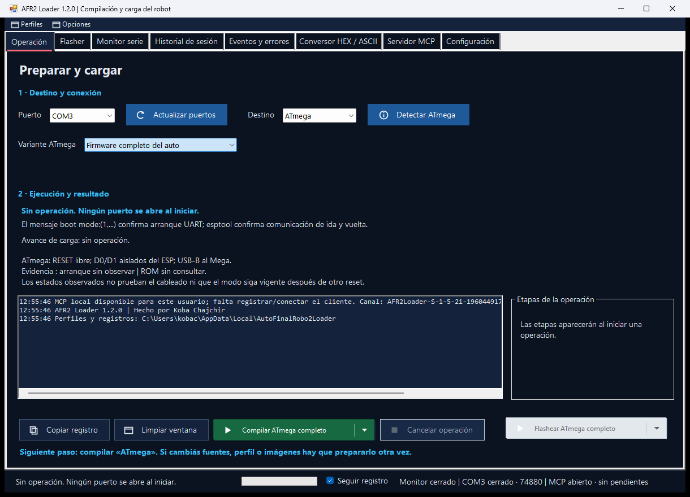
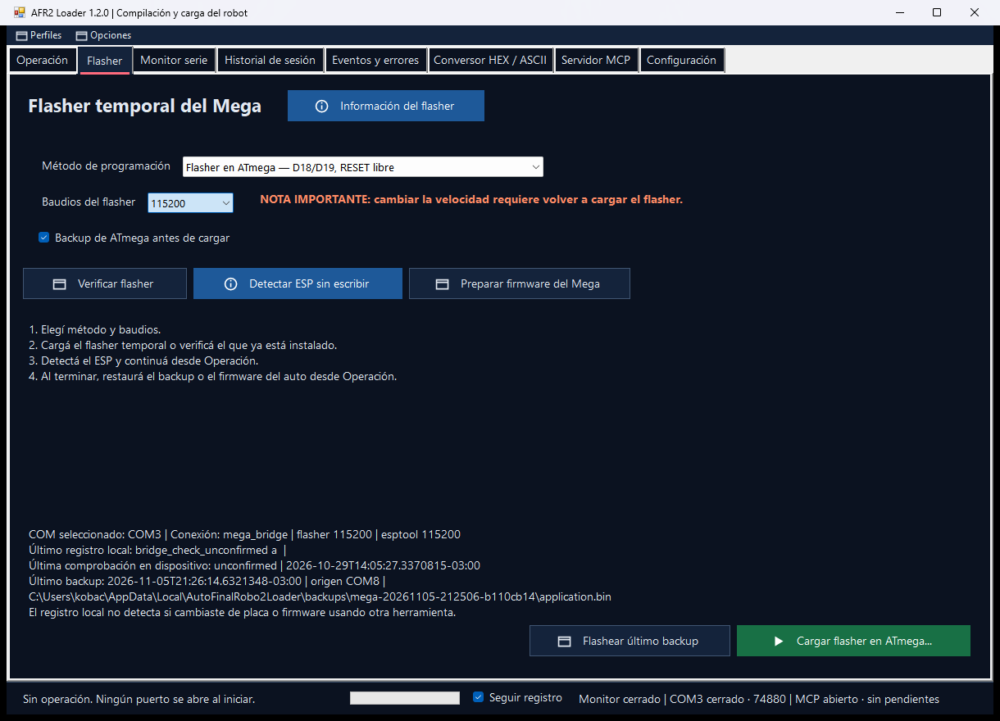

Informe de diagramación de la presentación · AutoFinalRobo2
13 filminas 16:9 sobre grilla 12×6 (título en f1). Cada recuadro es una zona A, B, C… con su contenido; las imágenes y diagramas que ya existen se muestran en su lugar. Fichas completas: Filmina_NN_*.md. Fotos: FOTOS.md. Diagramas: DIAGRAMAS.md. Prompt de armado: PROMPT_ARMADO_PPTX.md.
imagen existentediagramatextotablafórmulasfoto/captura por hacer
Paleta y tipografía
| Uso | Color |
|---|
| Acento | #B81D33 |
| Texto | #1F2430 |
| Panel | #F3F5F9 |
| Hardware | #6A4BB5 / #EFE9FF |
| Software | #2D6CB5 / #E4F0FF |
| Fallo | #B81D33 / #FDE7EA |
| Correcto | #2A8A52 / #E3F5EA |
Segoe UI · título 30 pt · zona 16 pt carmesí · texto 14 pt (mín. 12) · fórmulas Cambria Math 16 pt · pie 10 pt.
Filmina 1 · Introducción y arquitectura
Ficha: Filmina_01_Introduccion.md · tiempo de exposición ≈ 60 s
1 · Introducción y arquitectura
A · c1–c4 · f2–f6Hero imagen existente
FOTO-01 robot completo CAD
B · c5–c12 · f2–f4Arquitectura diagrama
D-01
C · c5–c8 · f5–f5Problema y objetivo texto
3 viñetas + criterio de evidencia
D · c9–c12 · f5–f5Seis módulos tabla
tabla 2 columnas
E · c5–c12 · f6–f6Cifras texto
chips: 4+6 · 7 servos · 54 cmd · 101 pantallas · 1.27.0
| Zona | Tipo | Rango | Contenido |
|---|
| A | imagen existente | c1–4 · f2–6 | Hero: FOTO-01 robot completo CAD |
| B | diagrama | c5–12 · f2–4 | Arquitectura: D-01 |
| C | texto | c5–8 · f5–5 | Problema y objetivo: 3 viñetas + criterio de evidencia |
| D | tabla | c9–12 · f5–5 | Seis módulos: tabla 2 columnas |
| E | texto | c5–12 · f6–6 | Cifras: chips: 4+6 · 7 servos · 54 cmd · 101 pantallas · 1.27.0 |
Filmina 2 · Modelos 3D
Ficha: Filmina_02_Modelos.md · tiempo de exposición ≈ 60 s
2 · Modelos 3D
A · c1–c4 · f2–f5Auto base imagen existente
FOTO-03 (+05/06 mini)
B · c5–c8 · f2–f5Brazo v17 imagen existente
FOTO-07 + tabla de cotas
C · c9–c12 · f2–f5Conjunto imagen existente
FOTO-01 + FOTO-08 captura Web
D · c1–c12 · f6–f6Datos clave tabla
3 columnas alineadas con A·B·C
| Zona | Tipo | Rango | Contenido |
|---|
| A | imagen existente | c1–4 · f2–5 | Auto base: FOTO-03 (+05/06 mini) |
| B | imagen existente | c5–8 · f2–5 | Brazo v17: FOTO-07 + tabla de cotas |
| C | imagen existente | c9–12 · f2–5 | Conjunto: FOTO-01 + FOTO-08 captura Web |
| D | tabla | c1–12 · f6–6 | Datos clave: 3 columnas alineadas con A·B·C |
Filmina 3 · Pinout y conexionado
Ficha: Filmina_03_Pinout_y_conexionado.md · tiempo de exposición ≈ 60 s
3 · Pinout y conexionado
A · c1–c6 · f2–f6Tabla de pinout tabla
motores · Hall/sensores · enlace y agregados ⭐
B · c7–c12 · f2–f4Conexionado diagrama
D-02
C · c7–c9 · f5–f6Shield imagen existente
FOTO-12 pinout OSOYOO
D · c10–c12 · f5–f6Cableado real foto/captura por hacer
FOTO-14 / FOTO-15 por tomar
| Zona | Tipo | Rango | Contenido |
|---|
| A | tabla | c1–6 · f2–6 | Tabla de pinout: motores · Hall/sensores · enlace y agregados ⭐ |
| B | diagrama | c7–12 · f2–4 | Conexionado: D-02 |
| C | imagen existente | c7–9 · f5–6 | Shield: FOTO-12 pinout OSOYOO |
| D | foto/captura por hacer | c10–12 · f5–6 | Cableado real: FOTO-14 / FOTO-15 por tomar |
Filmina 4 · Firmwares y ciclo
Ficha: Filmina_04_Firmwares_y_ciclo.md · tiempo de exposición ≈ 75 s
4 · Firmwares y ciclo
A · c1–c3 · f2–f5ATmega2560 texto
qué es · qué hace · seguridad
B · c4–c6 · f2–f5ESP8266 texto
HTTP · WS · broker · LittleFS
C · c7–c9 · f2–f5Web texto
React · vistas · cliente afr2-ws-1
D · c10–c12 · f2–f6Ciclo principal diagrama
D-03a (vertical)
E · c1–c9 · f6–f6Enlace compartido tabla
3 chips: WS · ROBO2/EX01 · Contracts
| Zona | Tipo | Rango | Contenido |
|---|
| A | texto | c1–3 · f2–5 | ATmega2560: qué es · qué hace · seguridad |
| B | texto | c4–6 · f2–5 | ESP8266: HTTP · WS · broker · LittleFS |
| C | texto | c7–9 · f2–5 | Web: React · vistas · cliente afr2-ws-1 |
| D | diagrama | c10–12 · f2–6 | Ciclo principal: D-03a (vertical) |
| E | tabla | c1–9 · f6–6 | Enlace compartido: 3 chips: WS · ROBO2/EX01 · Contracts |
Filmina 5 · Matemática del auto y odometría
Ficha: Filmina_05_Matematica_auto_y_odometria.md · tiempo de exposición ≈ 90 s
5 · Matemática del auto y odometría
A · c1–c6 · f2–f5Cinemática Mecanum fórmulas
u=A·S·V · A⁺ · γ · ejemplos
B · c7–c12 · f2–f3Patrones de rueda diagrama
D-11
C · c7–c10 · f4–f6Odometría fórmulas
Δφ · Δs · mezcla inversa · integración
D · c11–c12 · f4–f6Rueda + medidos imagen existente
FOTO-10 + tabla medido
E · c1–c6 · f6–f6Parámetros texto
r=40 · L=170 · N=370 · D=80
| Zona | Tipo | Rango | Contenido |
|---|
| A | fórmulas | c1–6 · f2–5 | Cinemática Mecanum: u=A·S·V · A⁺ · γ · ejemplos |
| B | diagrama | c7–12 · f2–3 | Patrones de rueda: D-11 |
| C | fórmulas | c7–10 · f4–6 | Odometría: Δφ · Δs · mezcla inversa · integración |
| D | imagen existente | c11–12 · f4–6 | Rueda + medidos: FOTO-10 + tabla medido |
| E | texto | c1–6 · f6–6 | Parámetros: r=40 · L=170 · N=370 · D=80 |
Filmina 6 · GOTO y odometría
Ficha: Filmina_06_GOTO_y_odometria.md · tiempo de exposición ≈ 90 s
6 · GOTO y odometría
A · c1–c4 · f2–f6Pipeline odometría diagrama
D-10
B · c5–c8 · f2–f6Flujo GOTO diagrama
D-04
C · c9–c12 · f2–f4Ley de control fórmulas
error · marco robot · llegada 10 mm/25 mrad
D · c9–c12 · f5–f6Web GOTO foto/captura por hacer
FOTO-21 / FOTO-22 capturas
| Zona | Tipo | Rango | Contenido |
|---|
| A | diagrama | c1–4 · f2–6 | Pipeline odometría: D-10 |
| B | diagrama | c5–8 · f2–6 | Flujo GOTO: D-04 |
| C | fórmulas | c9–12 · f2–4 | Ley de control: error · marco robot · llegada 10 mm/25 mrad |
| D | foto/captura por hacer | c9–12 · f5–6 | Web GOTO: FOTO-21 / FOTO-22 capturas |
Filmina 7 · Matemática del brazo y del conjunto
Ficha: Filmina_07_Matematica_brazo_y_conjunto.md · tiempo de exposición ≈ 100 s
7 · Matemática del brazo y del conjunto
A · c1–c12 · f2–f3Cadena cinemática diagrama
D-08 (banda ancha)
B · c1–c4 · f4–f6Cinemática directa fórmulas
T · ρ · z_W · p_TCP · ejemplo
C · c5–c8 · f4–f6Cinemática inversa fórmulas
p_W · q1 · q3 · q2 · muñeca
D · c9–c12 · f4–f5Conjunto + Jacobiano fórmulas
Q · T_W,TCP · V_TCP
E · c9–c12 · f6–f6Simulador foto/captura por hacer
FOTO-25 / FOTO-26
| Zona | Tipo | Rango | Contenido |
|---|
| A | diagrama | c1–12 · f2–3 | Cadena cinemática: D-08 (banda ancha) |
| B | fórmulas | c1–4 · f4–6 | Cinemática directa: T · ρ · z_W · p_TCP · ejemplo |
| C | fórmulas | c5–8 · f4–6 | Cinemática inversa: p_W · q1 · q3 · q2 · muñeca |
| D | fórmulas | c9–12 · f4–5 | Conjunto + Jacobiano: Q · T_W,TCP · V_TCP |
| E | foto/captura por hacer | c9–12 · f6–6 | Simulador: FOTO-25 / FOTO-26 |
Filmina 8 · Esfuerzos, tensiones y vuelco
Ficha: Filmina_08_Esfuerzos_y_vuelco.md · tiempo de exposición ≈ 100 s
8 · Esfuerzos, tensiones y vuelco
A · c1–c4 · f2–f4Masas y cargas tabla
total 4,045 kg
B · c5–c8 · f2–f4Pares y márgenes tabla
STS3250 16 kgf·cm
C · c9–c12 · f2–f4Vuelco imagen existente
FOTO-29 CG 0,85 mm
D · c1–c8 · f5–f6Método fórmulas
r_G · FS=M_est/M_vol · a_crit
E · c9–c12 · f5–f6Tabla de vuelco tabla
lateral 3,63 · atrás 1,86 · adelante 1,023
| Zona | Tipo | Rango | Contenido |
|---|
| A | tabla | c1–4 · f2–4 | Masas y cargas: total 4,045 kg |
| B | tabla | c5–8 · f2–4 | Pares y márgenes: STS3250 16 kgf·cm |
| C | imagen existente | c9–12 · f2–4 | Vuelco: FOTO-29 CG 0,85 mm |
| D | fórmulas | c1–8 · f5–6 | Método: r_G · FS=M_est/M_vol · a_crit |
| E | tabla | c9–12 · f5–6 | Tabla de vuelco: lateral 3,63 · atrás 1,86 · adelante 1,023 |
Filmina 9 · Simulador, misión y ciclo
Ficha: Filmina_09_Simulador_y_mision.md · tiempo de exposición ≈ 90 s
9 · Simulador, misión y ciclo
A · c1–c4 · f2–f4Cómo está definido texto
escena 3D · convención · alcance
B · c5–c12 · f2–f4Galería foto/captura por hacer
FOTO-33 · 34 · 35 · 36 capturas
C · c1–c4 · f5–f6Misión texto
cubos 50 mm · 4 celdas · fallos
D · c5–c9 · f5–f6Ciclo de misión diagrama
D-05
E · c10–c12 · f5–f6Secuencia de toma foto/captura por hacer
FOTO-37 · 38 · 39
| Zona | Tipo | Rango | Contenido |
|---|
| A | texto | c1–4 · f2–4 | Cómo está definido: escena 3D · convención · alcance |
| B | foto/captura por hacer | c5–12 · f2–4 | Galería: FOTO-33 · 34 · 35 · 36 capturas |
| C | texto | c1–4 · f5–6 | Misión: cubos 50 mm · 4 celdas · fallos |
| D | diagrama | c5–9 · f5–6 | Ciclo de misión: D-05 |
| E | foto/captura por hacer | c10–12 · f5–6 | Secuencia de toma: FOTO-37 · 38 · 39 |
Filmina 10 · Interfaz: pasos y pantallas
Ficha: Filmina_10_Interfaz.md · tiempo de exposición ≈ 90 s
10 · Interfaz: pasos y pantallas
A · c1–c4 · f2–f4Pasos de uso texto
1 encender → 6 programar
B · c5–c12 · f2–f3Pantallas OLED foto/captura por hacer
FOTO-48…52 + FOTO-53 silueta
C · c5–c8 · f4–f6Navegación diagrama
D-07
E · c9–c12 · f4–f6Reglas de entrada tabla
giro · corto · largo · Volver · Sí/No
D · c1–c4 · f5–f6Web (7 capturas) foto/captura por hacer
FOTO-41…47
| Zona | Tipo | Rango | Contenido |
|---|
| A | texto | c1–4 · f2–4 | Pasos de uso: 1 encender → 6 programar |
| B | foto/captura por hacer | c5–12 · f2–3 | Pantallas OLED: FOTO-48…52 + FOTO-53 silueta |
| C | diagrama | c5–8 · f4–6 | Navegación: D-07 |
| E | tabla | c9–12 · f4–6 | Reglas de entrada: giro · corto · largo · Volver · Sí/No |
| D | foto/captura por hacer | c1–4 · f5–6 | Web (7 capturas): FOTO-41…47 |
Filmina 11 · Agregado · AFR2 Loader
Ficha: Filmina_11_Agregado_Loader.md · tiempo de exposición ≈ 60 s
11 · Agregado · AFR2 Loader
A · c1–c4 · f2–f5Qué resuelve texto
6 viñetas
B · c5–c12 · f2–f4Capturas imagen existente
FOTO-54 Operación + FOTO-55 Flasher

C · c5–c12 · f5–f6Flujo diagrama
D-09
D · c1–c4 · f6–f6Chips tabla
2.4.0 · C# · portátil · manual
| Zona | Tipo | Rango | Contenido |
|---|
| A | texto | c1–4 · f2–5 | Qué resuelve: 6 viñetas |
| B | imagen existente | c5–12 · f2–4 | Capturas: FOTO-54 Operación + FOTO-55 Flasher |
| C | diagrama | c5–12 · f5–6 | Flujo: D-09 |
| D | tabla | c1–4 · f6–6 | Chips: 2.4.0 · C# · portátil · manual |
Filmina 12 · Agregado · NPN KEY / RST
Ficha: Filmina_12_Agregado_NPN_KEY_RST.md · tiempo de exposición ≈ 60 s
12 · Agregado · NPN KEY / RST
A · c1–c7 · f2–f5Circuito diagrama
D-06
B · c8–c12 · f2–f3Shield imagen existente
FOTO-61 KEY/RST
C · c8–c12 · f4–f5Problema → solución texto
secuencia de entrada y convivencia
D · c1–c12 · f6–f6Circuito real foto/captura por hacer
FOTO-62 · 63 · 64
| Zona | Tipo | Rango | Contenido |
|---|
| A | diagrama | c1–7 · f2–5 | Circuito: D-06 |
| B | imagen existente | c8–12 · f2–3 | Shield: FOTO-61 KEY/RST |
| C | texto | c8–12 · f4–5 | Problema → solución: secuencia de entrada y convivencia |
| D | foto/captura por hacer | c1–12 · f6–6 | Circuito real: FOTO-62 · 63 · 64 |
Filmina 13 · Agregado · Encoder y OLED
Ficha: Filmina_13_Agregado_Encoder_y_OLED.md · tiempo de exposición ≈ 75 s
13 · Agregado · Encoder y OLED
A · c1–c4 · f2–f5Hardware foto/captura por hacer
FOTO-65 panel · FOTO-66 PCB
B · c5–c8 · f2–f5Encoder texto
ISR · cola 32 B · botón al soltar
C · c9–c12 · f2–f5OLED texto
SSD1306 · I2C Manager · diferencial
D · c1–c8 · f6–f6Conectores tabla
J1 1×5 · J2 JST 1×2
E · c9–c12 · f6–f6Soporte / esquema foto/captura por hacer
FOTO-67 · 68
| Zona | Tipo | Rango | Contenido |
|---|
| A | foto/captura por hacer | c1–4 · f2–5 | Hardware: FOTO-65 panel · FOTO-66 PCB |
| B | texto | c5–8 · f2–5 | Encoder: ISR · cola 32 B · botón al soltar |
| C | texto | c9–12 · f2–5 | OLED: SSD1306 · I2C Manager · diferencial |
| D | tabla | c1–8 · f6–6 | Conectores: J1 1×5 · J2 JST 1×2 |
| E | foto/captura por hacer | c9–12 · f6–6 | Soporte / esquema: FOTO-67 · 68 |